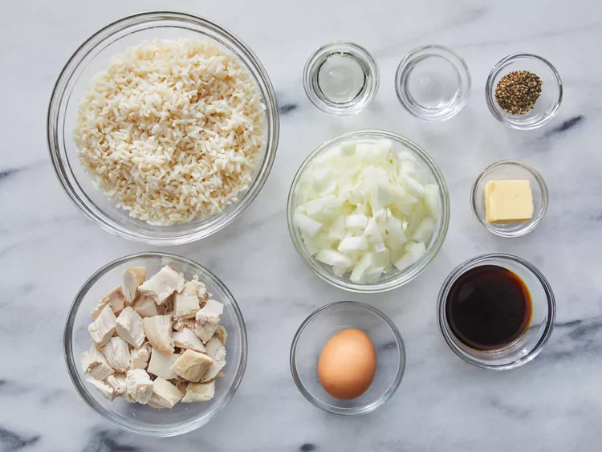

King Woman'Fried rice and Chicken

INGREDIENTS
- 1 large egg
- 1 tablespoon water
- 1 tablespoon butter
- 1 tablespoon vegetable oil
- 1 medium onion, chooped
- 2 cups cooked white rice, cold
- 1 cup cooked, chopped chicken meat
- 2 tablespoons soy sauce
- 1 teaspoon ground black pepper
STEPS TO COOK
- Gather all ingredients

- Beat egg and water together in small bowl. melt butter in a large skillet or work over medium-low heat; add egg and cook without stirring, 1 to 2 minutes. remove egg from skillet and cut into shreds; set aside

- heat oil in the same skillet. Add onion: cook and stir until soft, about 3 minutes. stir in rice, chicken, soy sauce, and pepper. Cook and stir for about 5 minutes; stir in shredded egg. Serve hot